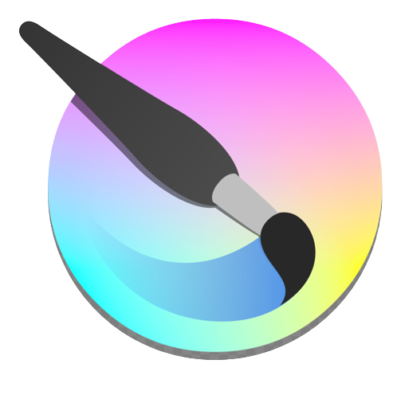
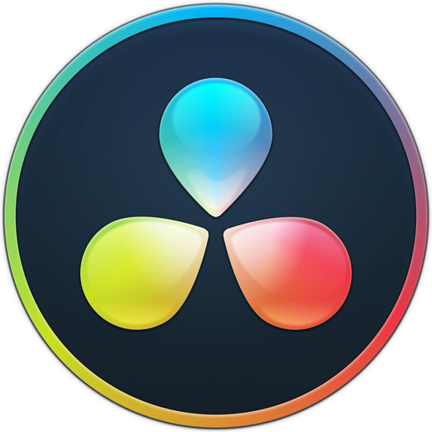
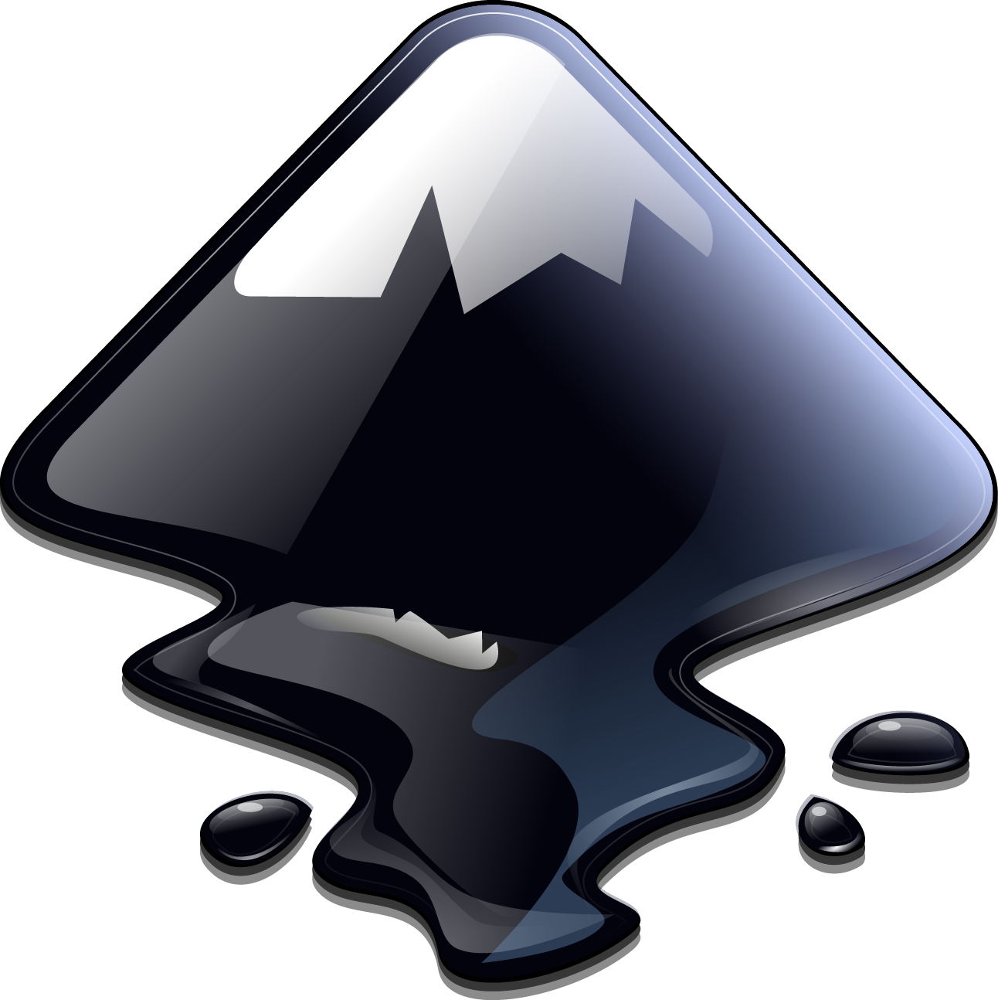
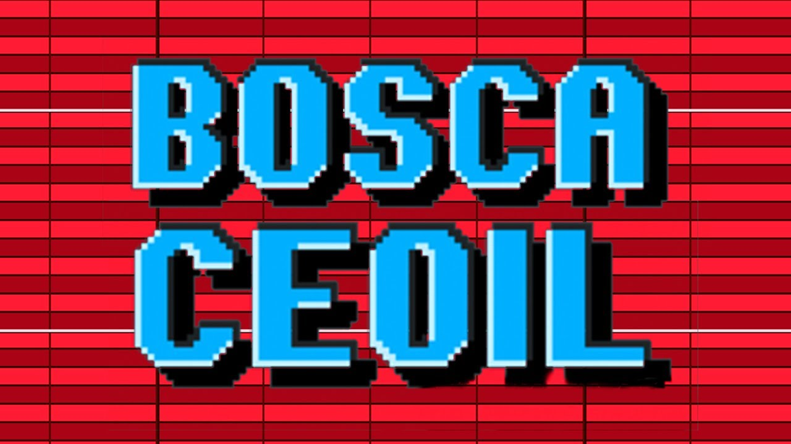

Brave
Secure, Fast and Private Web Browser with Adblocker
Brave Browser is a browser for desktop and mobile devices that blocks ads and trackers, as well as increasing browsing speed and security. It is available for Windows, macOS, Linux, iOS, Android, Windows Phone. Is a new web viewport with a built-in ad blocker, designed to create an open and private web experience for users.
Link to download brave
Blender
Blender is a free and open source 3D creation suite. It supports the entirety of the 3D pipeline—modeling, rigging, animation, simulation, rendering, compositing and motion tracking, and video editing. Advanced users employ Blender's API for Python scripting to customize the application and write specialized tools
Link to download BlenderKrita
Krita is a professional FREE and open source painting program. It is made by artists that want to see affordable art tools for everyone.
Link to Download krita Visual Studio Code
Visual Studio Code is a code editor redefined and optimized for building and debugging modern web and cloud applications. Visual Studio Code is free and available on your favorite platform - Linux, macOS, and Windows.
Link to download vs codeOBS Studio
OBS Open Broadcaster Software
OBS Studio is a free and open source program for livestreaming and video recording. Create scenes with multiple types of video sources, including your computer display, video games, webcams, video files, and more. Stream your video productions on sites like Twitch, YouTube, or Facebook live, or record your videos locally to share.
Link to download OBS StudioDaVinci Resolve
DaVinci Resolve is the world's only solution that combines editing, color correction, visual effects, motion graphics and audio post production all in one software tool! Its elegant, modern interface is fast to learn and easy enough for new users, yet powerful for professionals.
Link to download DaVinci Resolve Inkscape
Inkscape is a free and open-source vector graphics editor; it can be used to create or edit vector graphics such as illustrations, diagrams, line arts, charts, logos and complex paintings. Inkscape's primary vector graphics format is Scalable Vector Graphics (SVG), however many other formats can be imported and exported.
Link to download Inkscape Bosca Ceoil
Bosca Ceoil is a free, easy to use tool for creating music! Bosca is designed for beginners! It takes less than five minutes to learn, and comes with a quick built in tutorial to walk you through everything, step by step.
Link to download Bosca Ceoil 